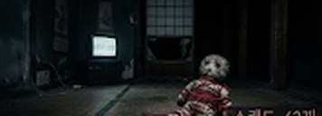
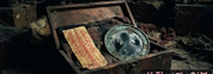
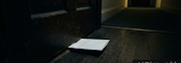

[단편] 감지된 사람: 2명 — 중고 AI 안경이 빈 복도를 사람이라고 했다
새벽 두 시, 혼자 남은 독서실. 기출 시험지 여백의 연한 글씨를 읽은 뒤부터 AI 안경은 묻지도 않은 말을 하기 시작했다. “주변에 사람 1명이 감지되었습니다. 방향: 뒤쪽.”

댓글 0 · 조회 0
새벽 두 시, 혼자 남은 독서실. 기출 시험지 여백의 연한 글씨를 읽은 뒤부터 AI 안경은 묻지도 않은 말을 하기 시작했다. “주변에 사람 1명이 감지되었습니다. 방향: 뒤쪽.”
2008년 VIP게시판을 공포로 몰아넣었던 전설의 스레드 전문 번역. 인형 속에 쌀과 손톱을 넣고 붉은 실로 묶은 뒤 TV 지지직 소리만 남겨두었는데, 옷장 문 틈으로 발소리가 멈췄다...

지난 명절 충북 괴산 외갓집을 정리하던 중, 천장 다락 안쪽 깊숙한 목함 속에서 발견된 기이한 물건들입니다. 뒤편에 가족들의 생년월일이 칼로 긁혀 적혀 있었고 할머니께 여쭙자 낯빛이 하얗게 질리셨습니다.

이사 온 지 2주째, 새벽 2시마다 현관문 아래 틈새로 손글씨 쪽지가 밀려 들어온다. “오늘 옷 색깔이 잘 어울리네”, “어제는 왜 불을 늦게 껐어?” 하지만 오늘 아침 경비실에서 충격적인 사실을 듣게 되었다.

침대에 누워 폰을 잠금해제하려던 순간, 전면 센서의 초록색 불빛이 내 얼굴이 아닌 천장 구석 빈 공간을 조준하더니 딸깍 소리와 함께 화면이 열렸다. 등록된 얼굴 이름: “지하의 주인”...